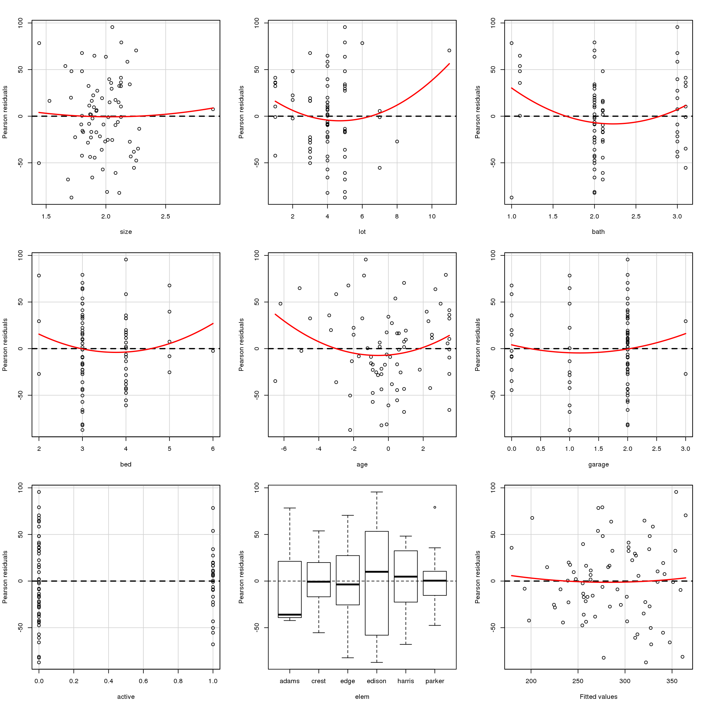
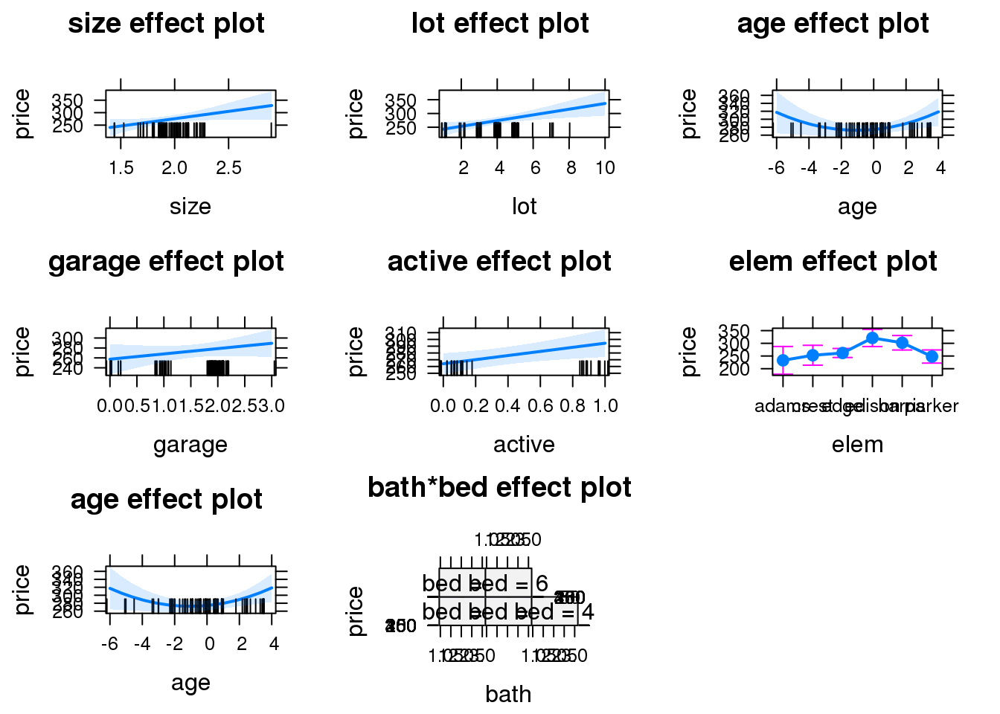
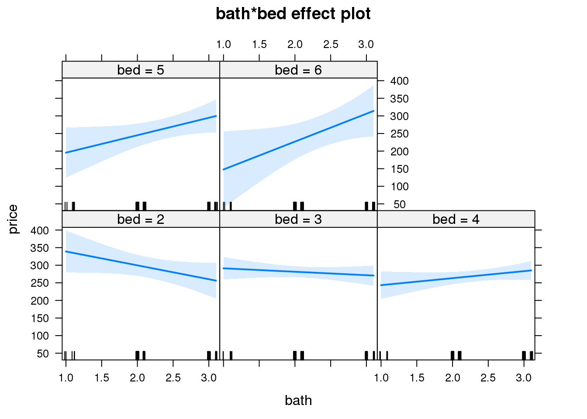
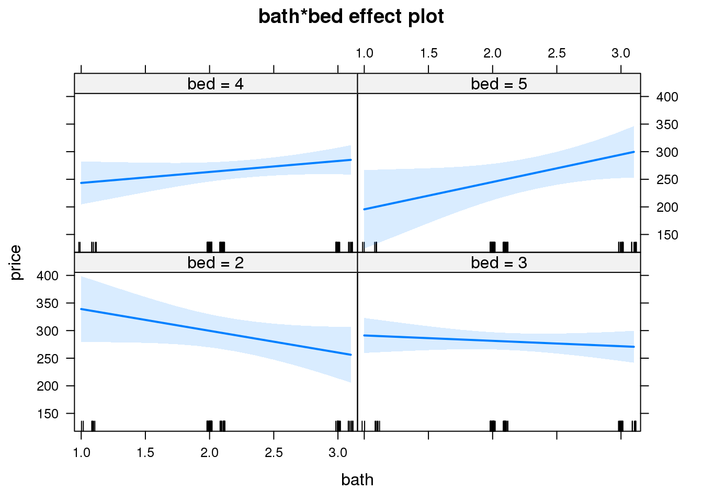
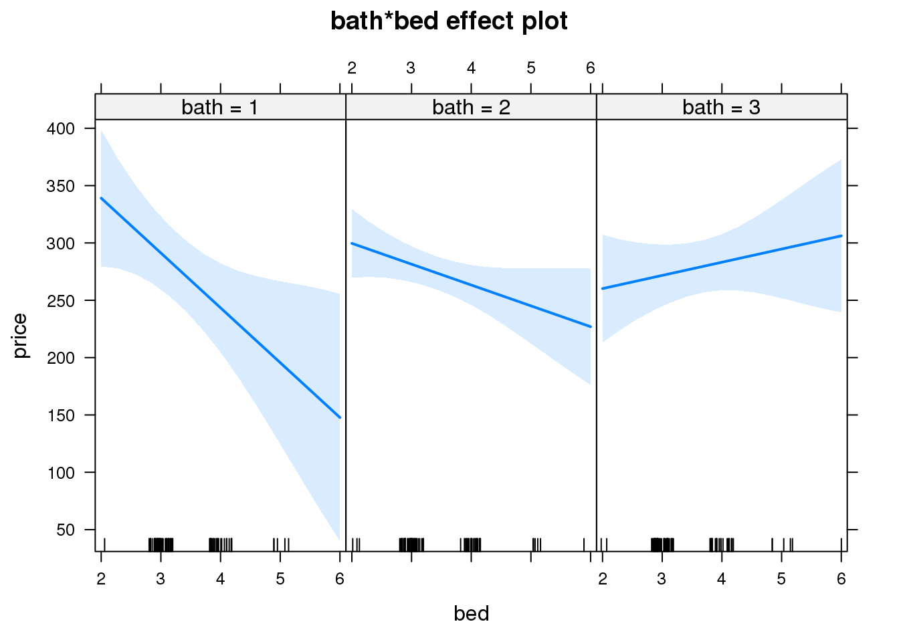

library(DT)
library(ggplot2)
library(MASS)
library(car)HP <- read.delim('http://ww2.amstat.org/publications/jse/datasets/homes76.dat.txt', header = TRUE)
HP <- data.frame(HP[2], HP[3], HP[4], HP[5], HP[6], HP[8], HP[9], HP[11], HP[12], HP[13], HP[14])
names(HP) <- c('price', 'size', 'lot', 'bath', 'bed', 'year', 'age', 'garage', 'status', 'active', 'elem')
datatable(HP)On its own age ( price ~ age) seems to be not important given its low t-value and high p-value, but from the article we no this is not the case. This must mean that age\(^2\) might change that or it is important in context with other variables. Also, an open status in a simple model (price ~ status) is not significant factor, but is also something that becomes significant in the greater model when added to a model with several barriers. This follows with active which is just a dummy variable for when status equals open so it makes sense. When adding everything to one model and add age\(^2\) things change. age\(^2\) is significant.
price and size?mod.hi <- lm(price ~ ., data = HP)
mod.low <- lm(price ~ 1, data = HP )
mod.fs <- stepAIC(mod.low, scope = list(lower = mod.low, upper = mod.hi), direction = "forward")## Start: AIC=624.17
## price ~ 1
##
## Df Sum of Sq RSS AIC
## + elem 5 60570 212433 615.11
## + garage 1 35065 237938 615.73
## + bed 1 22361 250641 619.68
## + lot 1 16284 256718 621.50
## + status 2 20951 252052 622.11
## + size 1 11078 261925 623.03
## + active 1 9219 263784 623.56
## + bath 1 8328 264674 623.82
## <none> 273002 624.17
## + year 1 6485 266517 624.35
## + age 1 6485 266517 624.35
##
## Step: AIC=615.11
## price ~ elem
##
## Df Sum of Sq RSS AIC
## + garage 1 40716 171717 600.94
## + lot 1 35860 176573 603.06
## + status 2 25695 186738 609.31
## + bed 1 19964 192469 609.61
## + age 1 17610 194823 610.53
## + year 1 17610 194823 610.53
## + active 1 14549 197884 611.72
## + size 1 12382 200051 612.55
## <none> 212433 615.11
## + bath 1 4284 208149 615.56
##
## Step: AIC=600.94
## price ~ elem + garage
##
## Df Sum of Sq RSS AIC
## + lot 1 18261.9 153455 594.39
## + size 1 7010.3 164707 599.77
## + active 1 5486.8 166230 600.47
## <none> 171717 600.94
## + bed 1 4075.2 167642 601.11
## + status 2 8034.8 163682 601.30
## + bath 1 1625.2 170092 602.22
## + year 1 1183.4 170534 602.41
## + age 1 1183.4 170534 602.41
##
## Step: AIC=594.39
## price ~ elem + garage + lot
##
## Df Sum of Sq RSS AIC
## + active 1 7593.8 145861 592.54
## + size 1 7299.1 146156 592.69
## + status 2 9400.3 144055 593.59
## + bath 1 4022.6 149433 594.37
## <none> 153455 594.39
## + age 1 2939.1 150516 594.92
## + year 1 2939.1 150516 594.92
## + bed 1 1311.2 152144 595.74
##
## Step: AIC=592.54
## price ~ elem + garage + lot + active
##
## Df Sum of Sq RSS AIC
## + size 1 11949.1 133912 588.04
## + bath 1 4183.5 141678 592.32
## <none> 145861 592.54
## + year 1 2772.6 143089 593.08
## + age 1 2772.6 143089 593.08
## + status 1 1806.5 144055 593.59
## + bed 1 949.5 144912 594.04
##
## Step: AIC=588.04
## price ~ elem + garage + lot + active + size
##
## Df Sum of Sq RSS AIC
## + bed 1 4696.1 129216 587.33
## <none> 133912 588.04
## + status 1 3261.0 130651 588.17
## + year 1 1895.9 132016 588.96
## + age 1 1895.9 132016 588.96
## + bath 1 211.9 133700 589.92
##
## Step: AIC=587.33
## price ~ elem + garage + lot + active + size + bed
##
## Df Sum of Sq RSS AIC
## <none> 129216 587.33
## + status 1 2712.28 126504 587.71
## + year 1 723.98 128492 588.90
## + age 1 723.98 128492 588.90
## + bath 1 551.18 128665 589.00mod.be <- stepAIC(mod.hi, scope = list(lower = mod.low,upper = mod.hi), direction = "backward")## Start: AIC=591.14
## price ~ size + lot + bath + bed + year + age + garage + status +
## active + elem
##
##
## Step: AIC=591.14
## price ~ size + lot + bath + bed + year + age + garage + status +
## elem
##
##
## Step: AIC=591.14
## price ~ size + lot + bath + bed + year + garage + status + elem
##
## Df Sum of Sq RSS AIC
## - year 1 295 125846 589.32
## - bath 1 436 125986 589.40
## - garage 1 1338 126889 589.95
## <none> 125551 591.14
## - bed 1 3541 129092 591.25
## - status 2 14277 139828 595.33
## - size 1 11116 136666 595.59
## - lot 1 16863 142414 598.72
## - elem 5 72614 198165 615.83
##
## Step: AIC=589.32
## price ~ size + lot + bath + bed + garage + status + elem
##
## Df Sum of Sq RSS AIC
## - bath 1 658 126504 587.71
## - garage 1 2066 127912 588.56
## <none> 125846 589.32
## - bed 1 4500 130346 589.99
## - status 2 14556 140401 593.64
## - size 1 11370 137216 593.89
## - lot 1 16592 142437 596.73
## - elem 5 78085 203930 616.00
##
## Step: AIC=587.71
## price ~ size + lot + bed + garage + status + elem
##
## Df Sum of Sq RSS AIC
## - garage 1 2432 128936 587.16
## <none> 126504 587.71
## - bed 1 4147 130651 588.17
## - status 2 15172 141676 592.32
## - lot 1 15997 142501 594.76
## - size 1 16863 143367 595.22
## - elem 5 80040 206544 614.97
##
## Step: AIC=587.16
## price ~ size + lot + bed + status + elem
##
## Df Sum of Sq RSS AIC
## <none> 128936 587.16
## - bed 1 7689 136625 589.56
## - status 2 22758 151694 595.52
## - lot 1 18948 147883 595.58
## - size 1 23305 152240 597.79
## - elem 5 80234 209170 613.93The units of price on size is in units of 1000 square feet, so 2400 square feet is represented as 2.4.
The backwards method has a better model because it has a lower AIC. The backwards AIC = 587.16 and the forward AIC = 587.33.
mod1 <- lm(price ~ . - status - year, data = HP)
summary(mod1)##
## Call:
## lm(formula = price ~ . - status - year, data = HP)
##
## Residuals:
## Min 1Q Median 3Q Max
## -87.265 -27.217 -0.222 30.125 95.583
##
## Coefficients:
## Estimate Std. Error t value Pr(>|t|)
## (Intercept) 88.144 57.780 1.526 0.13214
## size 69.782 30.934 2.256 0.02756 *
## lot 10.750 3.667 2.932 0.00469 **
## bath 4.615 11.748 0.393 0.69575
## bed -12.459 9.120 -1.366 0.17676
## age 1.626 3.324 0.489 0.62643
## garage 10.053 9.261 1.086 0.28182
## active 30.874 12.902 2.393 0.01971 *
## elemcrest 4.809 34.067 0.141 0.88819
## elemedge 7.466 29.050 0.257 0.79802
## elemedison 87.195 30.810 2.830 0.00624 **
## elemharris 53.786 30.629 1.756 0.08394 .
## elemparker -11.904 30.009 -0.397 0.69296
## ---
## Signif. codes: 0 '***' 0.001 '**' 0.01 '*' 0.05 '.' 0.1 ' ' 1
##
## Residual standard error: 45.11 on 63 degrees of freedom
## Multiple R-squared: 0.5305, Adjusted R-squared: 0.4411
## F-statistic: 5.932 on 12 and 63 DF, p-value: 8.906e-07res <- car::residualPlots(mod1)
res## Test stat Pr(>|t|)
## size 0.303 0.763
## lot 1.979 0.052
## bath 2.376 0.021
## bed 1.011 0.316
## age 2.316 0.024
## garage 0.813 0.419
## active -2.016 0.048
## elem NA NA
## Tukey test 0.333 0.739Given the residual plots, size and lot looks linear while it seems that bath, lot, bed, and age seem to have a non-linear form. I would probably attempt to create a sqared term for those terms to see if it boosts the adjusted \(R^2\) term, which is `r 0.4410564. I would also try interaction terms with the terms that seem non-linear to see which ones are a better fit to the data.
mod2 <- lm(price ~ . - status - year + bath:bed + I(age ^ 2), HP)
summary(mod2)##
## Call:
## lm(formula = price ~ . - status - year + bath:bed + I(age^2),
## data = HP)
##
## Residuals:
## Min 1Q Median 3Q Max
## -83.284 -22.628 -0.066 27.790 111.323
##
## Coefficients:
## Estimate Std. Error t value Pr(>|t|)
## (Intercept) 308.7738 118.9553 2.596 0.01181 *
## size 58.7689 29.2569 2.009 0.04900 *
## lot 10.3619 3.5731 2.900 0.00518 **
## bath -98.7362 47.9507 -2.059 0.04376 *
## bed -77.4817 32.3252 -2.397 0.01961 *
## age 3.7771 3.2371 1.167 0.24784
## garage 10.6773 8.7030 1.227 0.22460
## active 30.3572 12.2685 2.474 0.01614 *
## elemcrest 20.0071 32.4456 0.617 0.53977
## elemedge 28.8890 28.2176 1.024 0.30998
## elemedison 88.1039 29.7429 2.962 0.00435 **
## elemharris 69.1235 30.3032 2.281 0.02605 *
## elemparker 14.9554 30.7470 0.486 0.62842
## I(age^2) 1.8236 0.7571 2.409 0.01905 *
## bath:bed 29.6573 13.6582 2.171 0.03380 *
## ---
## Signif. codes: 0 '***' 0.001 '**' 0.01 '*' 0.05 '.' 0.1 ' ' 1
##
## Residual standard error: 42.37 on 61 degrees of freedom
## Multiple R-squared: 0.5989, Adjusted R-squared: 0.5068
## F-statistic: 6.505 on 14 and 61 DF, p-value: 8.906e-08summary(mod2)$adj.r.squared## [1] 0.5068237\[R^2 = 0.5068237\]
mod3 <- update(mod2, . ~ . -elem + I(elem == "harris") + I(elem == "edison"))
#mod3 <- lm(price )
mod3##
## Call:
## lm(formula = price ~ size + lot + bath + bed + age + garage +
## active + I(age^2) + I(elem == "harris") + I(elem == "edison") +
## bath:bed, data = HP)
##
## Coefficients:
## (Intercept) size lot
## 332.478 56.719 9.917
## bath bed age
## -98.156 -78.910 3.301
## garage active I(age^2)
## 13.119 27.424 1.641
## I(elem == "harris")TRUE I(elem == "edison")TRUE bath:bed
## 47.273 67.062 30.390summary(mod3)##
## Call:
## lm(formula = price ~ size + lot + bath + bed + age + garage +
## active + I(age^2) + I(elem == "harris") + I(elem == "edison") +
## bath:bed, data = HP)
##
## Residuals:
## Min 1Q Median 3Q Max
## -81.310 -26.101 -1.337 27.236 105.083
##
## Coefficients:
## Estimate Std. Error t value Pr(>|t|)
## (Intercept) 332.4781 106.5992 3.119 0.002720 **
## size 56.7190 27.9738 2.028 0.046772 *
## lot 9.9168 3.4379 2.885 0.005335 **
## bath -98.1564 42.6665 -2.301 0.024686 *
## bed -78.9099 27.7519 -2.843 0.005985 **
## age 3.3014 3.1695 1.042 0.301507
## garage 13.1185 8.2846 1.583 0.118239
## active 27.4236 10.9885 2.496 0.015160 *
## I(age^2) 1.6413 0.7333 2.238 0.028683 *
## I(elem == "harris")TRUE 47.2732 14.8443 3.185 0.002240 **
## I(elem == "edison")TRUE 67.0619 16.8220 3.987 0.000175 ***
## bath:bed 30.3901 11.8781 2.559 0.012889 *
## ---
## Signif. codes: 0 '***' 0.001 '**' 0.01 '*' 0.05 '.' 0.1 ' ' 1
##
## Residual standard error: 41.91 on 64 degrees of freedom
## Multiple R-squared: 0.5883, Adjusted R-squared: 0.5175
## F-statistic: 8.314 on 11 and 64 DF, p-value: 7.698e-09anova(mod3, mod2)## Analysis of Variance Table
##
## Model 1: price ~ size + lot + bath + bed + age + garage + active + I(age^2) +
## I(elem == "harris") + I(elem == "edison") + bath:bed
## Model 2: price ~ (size + lot + bath + bed + year + age + garage + status +
## active + elem) - status - year + bath:bed + I(age^2)
## Res.Df RSS Df Sum of Sq F Pr(>F)
## 1 64 112395
## 2 61 109506 3 2889.6 0.5365 0.659Yes, the p-value is NA, 0.6590107 \[R^2 = 0.5175377\] P - value of this F-test is saying that there is a NA, 0.6590107 chance that the models fit the data equally. So we can drop the three indicators because we fail to reject the null hypothesis that they are equal to 0.
mean(resid(mod.fs)^2)## [1] 1700.212mean(resid(mod.be)^2)## [1] 1696.523mean(resid(mod2)^2)## [1] 1440.867mean(resid(mod3)^2)## [1] 1478.887mod2 has the lowest MSE with 1440.8665899. I can’t be sure, but I do know that given what we have found with the F-Test for mod3 it might be score higher than mod3. But, we have very little data and so the F-Test may be faulty. I would stick with mod3 and see how things turned out and adjust if it turns out that it is incorrect.
predict(mod3, newdata = data.frame(size = 1.879, lot = 4, bath = 2.1, bed = 3, garage = 2, active = 1 , age = .5, elem = 'parker'), level = .95, interval = 'predict')## fit lwr upr
## 1 283.0415 197.0626 369.0205library(effects)## Loading required package: carData##
## Attaching package: 'carData'## The following objects are masked from 'package:car':
##
## Guyer, UN, Vocab## lattice theme set by effectsTheme()
## See ?effectsTheme for details.plot(allEffects(mod2))
plot(effect("bath*bed", mod2))
plot(effect("bath*bed", mod2, xlevels=list(bed=2:5)))
plot(effect("bath*bed", mod2, xlevels=list(bath=1:3)))
The first set of graphs is displaying the scatter plots of the indicators. THe second set of graphs is showing the slope of mod2 when bed equals 2 thorugh 5. The third modle is showing the slope for the bath*bed term as bed is set equal to the values 1 through 3.